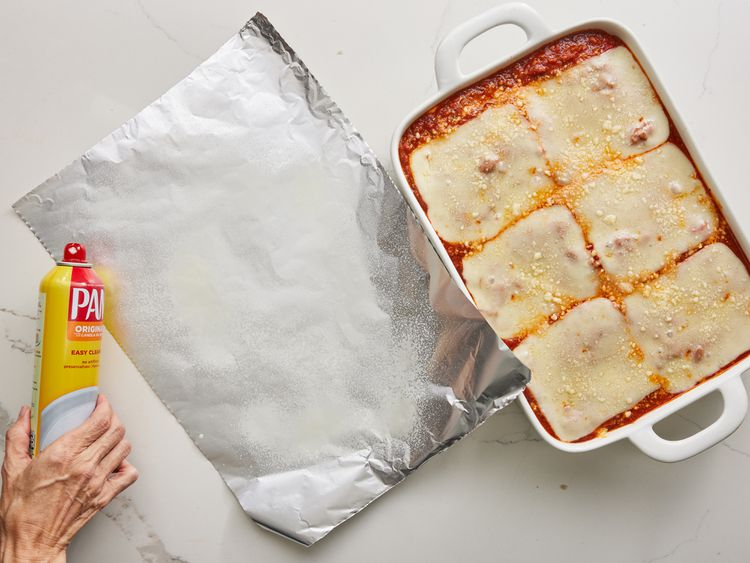

Lasagna

Prep Time: 30 mins.
Cook Time: 2 hrs 30 mins.
Additional Time: 15 mins.
Total Time: 3 hrs 15 mins.
Making lasagna can be time-consuming, but the results are well worth the wait. You'll find a detailed ingredient list and step-by-step instructions in the recipe below.
This lasagna recipe takes a little work, but it is so satisfying and filling that it's worth it!
Ingredients:
- Meat: This super meaty lasagna has sweet Italian sausage and lean ground beef.
- Onion and garlic: An onion and two cloves of garlic are cooked with the meat to add tons of flavor.
- Tomato products: You'll need a can of crushed tomatoes, two cans of tomato sauce, and two cans of tomato paste.
- Sugar: Two tablespoons of white sugar add subtle sweetness and enhance the flavor of the sauce.
- Spices and seasonings: This lasagna recipe is flavored with fresh parsley, dried basil leaves, salt, Italian seasoning, fennel seeds, and black pepper.
- Lasagna noodles: Use store-bought or homemade lasagna noodles.
- Cheeses: Parmesan, mozzarella, and ricotta cheese make this lasagna extra decadent.
- Egg: An egg helps bind the ricotta so it doesn't ooze out of the lasagna when you cut into it.
Steps:
- Gather all your ingredients.

- Cook sausage, ground beef, onion, and garlic in a Dutch oven over medium heat until well browned.
- Stir in crushed tomatoes, tomato sauce, tomato paste, and water. Season with sugar, 2 tablespoons parsley, basil, 1 teaspoon salt, Italian seasoning, fennel seeds, and pepper.
Simmer, covered, for about 1 ½ hours, stirring occasionally.

- Bring a large pot of lightly salted water to a boil. Cook lasagna noodles in boiling water for 8 to 10 minutes. Drain noodles, and rinse with cold water.

- In a mixing bowl, combine ricotta cheese with egg, remaining 2 tablespoons parsley, and 1/2 teaspoon salt.

- Preheat the oven to 375 degrees F (190 degrees C).
- To assemble, spread 1 ½ cups of meat sauce in the bottom of a 9x13-inch baking dish.
Arrange 6 noodles lengthwise over meat sauce, overlapping slightly.
Spread with 1/2 of the ricotta cheese mixture.
Top with 1/3 of the mozzarella cheese slices.
Spoon 1 ½ cups meat sauce over mozzarella, and sprinkle with 1/4 cup Parmesan cheese.

- Repeat layers, and top with remaining mozzarella and Parmesan cheese. Cover with foil: to prevent sticking,
either spray foil with cooking spray or make sure the foil does not touch the cheese.

- Bake in the preheated oven for 25 minutes. Remove the foil and bake for an additional 25 minutes.

- Rest lasagna for 15 minutes before serving.